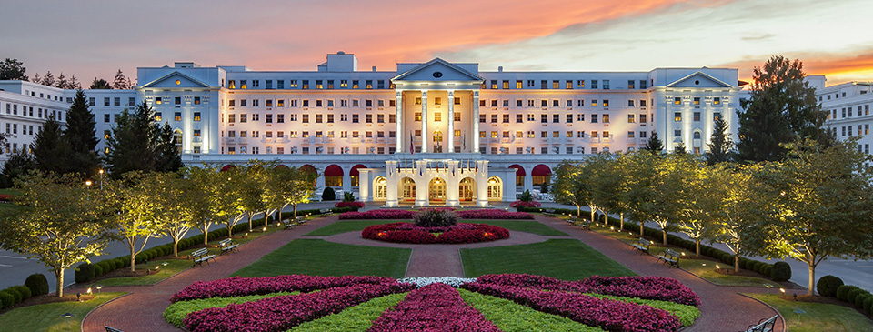
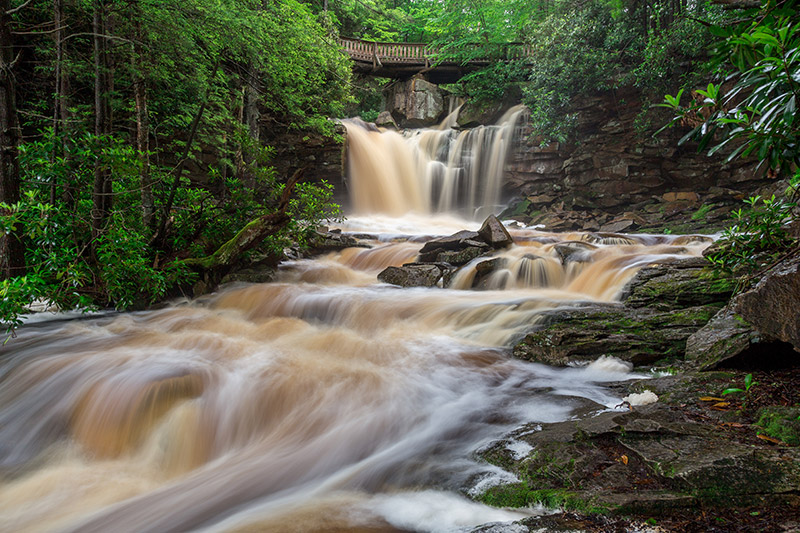
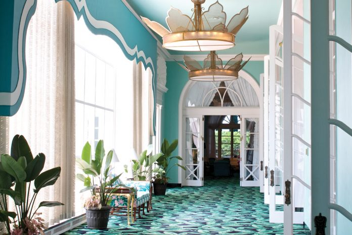
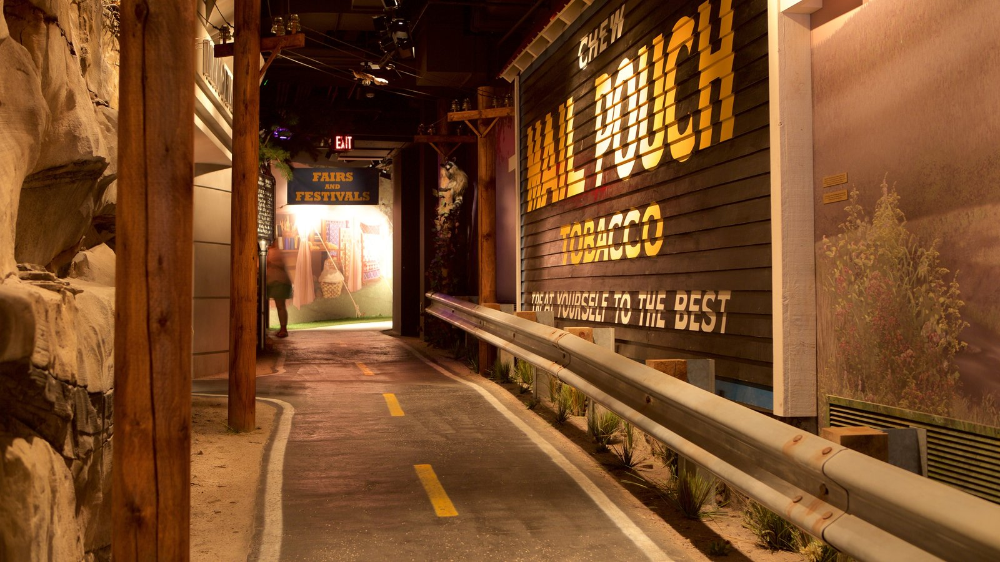

Restaurant
Big Joe’s
Location: 10 Capitol St Charleston, WV 25301
Contact Info: (304) 400-4643
Website: http://bigjoescharlestonwv.com/
About: This Bar, offers a great selection of everyones favorite foods! This includes, pizza, and burgers and so many more! They also have a wide selection of beverages!

Living Quarters
The Greenbrier
Location: 101 Main Street West, White Sulphur Springs, WV 24986
Contact Info: (855) 453-4858
Website: http://www.greenbrier.com/
About: This resort has it all! It offers 710 rooms, including 33 suites and 96 guest and estate homes, it also has 10 lobbies, more than 40 meeting rooms and a complete conference center facility. It even has a great view by being surrounded by the Allegheny Mountains! The Greenbrier offers exclusive services and amenities such as championship golf, fine dining, more than 55 other activities, and a 103,000 square foot gaming and entertainment venue.

Landmark
Blackwater Falls State Park
Location: N/A
Contact Info: 1-833-WV-PARKS
Website: https://wvstateparks.com/park/blackwater-falls-state-park/
About: This Park is located in the Allegheny Mountains of Tucker County, that in which surrounds Greenbrier. Blackwater Falls State Park is named for the amber waters of its famous Blackwater Falls, a 57-foot cascade that in which is tinted by the tannic acid of fallen hemlock and it’s red spruce needles. The falls, is the main attraction of Blackwater Falls State Park, which is accessible from steps and several viewing platforms that allow visitors to enjoy scenic views year-round.

Spa
The Greenbrier
Location: 101 Main Street West, White Sulphur Springs, WV 24986
Contact Info: (855) 453-4858
Website: http://www.greenbrier.com/
About: This Spa was renowned and now a mineral spa with all sorts of different types of massages and treatments. This spa also includes saunas and steam rooms! As well as a meditation area for those who prefer it.

Museum
West Virginia State Museum
Location: 1900 Kanawha Blvd E #435, Charleston, WV 25305
Contact Info: (304) 558-0220
Website: N/A
About: This museum is filled with more than 6,000 artifacts from the state’s history. It not only offers some visual entertainment but as well as other activities such as neo traditional music from songs all over the world.
